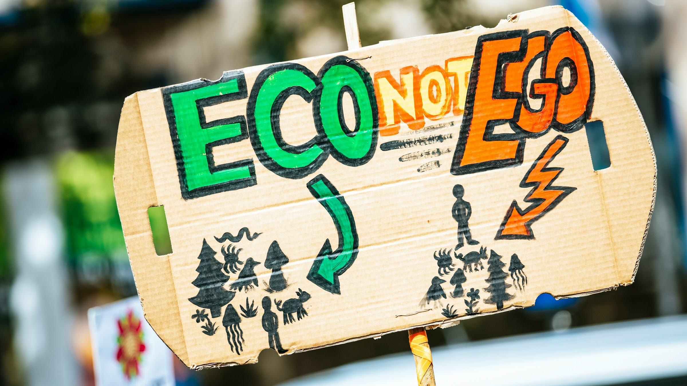

Le changement climatique
 Image par Markus Spiske sur Unsplash.
Le changement climatique constitue l'un des défis les plus critiques et complexes de notre époque. Ses impacts potentiels sur les écosystèmes, les économies et les sociétés humaines sont vastes et variés, nécessitant une compréhension approfondie et une action concertée. Cette section se propose d'explorer de manière exhaustive les différentes dimensions du changement climatique, de son histoire à ses manifestations actuelles, en passant par les scénarios futurs et les mesures individuelles de réduction des impacts. À travers des analyses rigoureuses et des données actualisées, nous visons à offrir une vue d'ensemble claire et complète sur ce phénomène global.
Historique du changement climatique
L'historique du changement climatique remonte à bien avant la révolution industrielle, mais c'est à partir de cette période que les émissions anthropiques de gaz à effet de serre ont commencé à croître de manière exponentielle. Cette sous-section retrace les étapes clés de cette évolution, mettant en lumière les travaux de scientifiques comme Joseph Fourier, Svante Arrhenius et John Tyndall, qui ont jeté les bases de notre compréhension actuelle de l'effet de serre. Nous examinerons les découvertes majeures qui ont révélé le lien entre les émissions de CO2 et le réchauffement global, ainsi que le développement des premières institutions internationales et législations visant à limiter ces émissions. Des accords comme le Protocole de Kyoto et l'Accord de Paris seront également abordés pour illustrer les efforts mondiaux dans la lutte contre le changement climatique.
Gaz à effet de serre
Les gaz à effet de serre (GES) sont au cœur du problème climatique. Cette sous-section se concentre sur une analyse détaillée des différents types de GES, tels que le dioxyde de carbone (CO2), le méthane (CH4), et les oxydes d'azote (NOx), ainsi que les hydrofluorocarbures (HFC) et autres gaz industriels. Nous explorerons leurs sources, leurs mécanismes d'action et leur impact relatif sur le réchauffement climatique. À travers des graphiques et des données actuelles, nous montrerons les tendances récentes en matière d'émissions et les efforts déployés pour les réduire. Cette section inclura également une discussion sur les potentiels de réchauffement global (PRG) de différents GES et les stratégies de mitigation les plus efficaces pour chaque type de gaz.
État actuel du climat
Évaluer l'état actuel du climat est essentiel pour comprendre l'urgence et l'ampleur du défi climatique. Cette sous-section s'appuie sur des rapports de référence tels que le "State of the Climate Report", le "Emissions Gap Report" et le "Adaptation Gap Report", publiés annuellement. Nous analyserons les données les plus récentes sur les températures mondiales, les concentrations de gaz à effet de serre, les changements dans les régimes de précipitations, et la fréquence et l'intensité des événements climatiques extrêmes. Nous aborderons également les efforts d'adaptation en cours et les lacunes identifiées, offrant une vue d'ensemble des progrès réalisés et des défis restant à relever. Cette section visera à fournir une compréhension nuancée et basée sur des données de l'état actuel du climat et des réponses institutionnelles.
Scénarios futurs
Les projections climatiques futures sont cruciales pour planifier et adapter les politiques environnementales. Cette sous-section examine les différents scénarios prédictifs élaborés par les modèles climatiques actuels, en se basant sur divers niveaux d'émissions futures et d'interventions politiques. Nous détaillerons les conséquences attendues des changements climatiques, telles que l'augmentation de la fréquence et de la gravité des feux de forêt, la dégradation des sols, l'érosion des côtes, la montée du niveau de la mer, les inondations, les tempêtes plus intenses et les vagues de chaleur accrues. En outre, nous discuterons des impacts socio-économiques, tels que les déplacements de populations, les défis pour l'agriculture et la sécurité alimentaire, et les répercussions sur la santé publique. Cette section vise à fournir une vision exhaustive des défis à venir et de la nécessité de stratégies d'adaptation robustes.
Quoi faire au quotidien?
Bien que les solutions aux changements climatiques nécessitent des actions systémiques et des politiques globales, les comportements individuels jouent également un rôle crucial. Cette sous-section se concentre sur les mesures pratiques que chacun peut adopter pour réduire son empreinte carbone. Nous examinerons les actions concrètes telles que la réduction de la consommation énergétique, l'adoption de modes de transport plus durables, la gestion des déchets et la promotion de l'économie circulaire, ainsi que l'alimentation à faible empreinte carbone. Nous mettrons également en lumière l'importance des choix de consommation et leur impact sur les émissions globales, tout en soulignant le rôle des politiques publiques pour rendre les options écologiques plus accessibles et attractives. Cette section vise à encourager et à guider les actions individuelles vers un mode de vie plus durable, tout en reconnaissant la responsabilité plus large des grandes entreprises et des décideurs politiques.